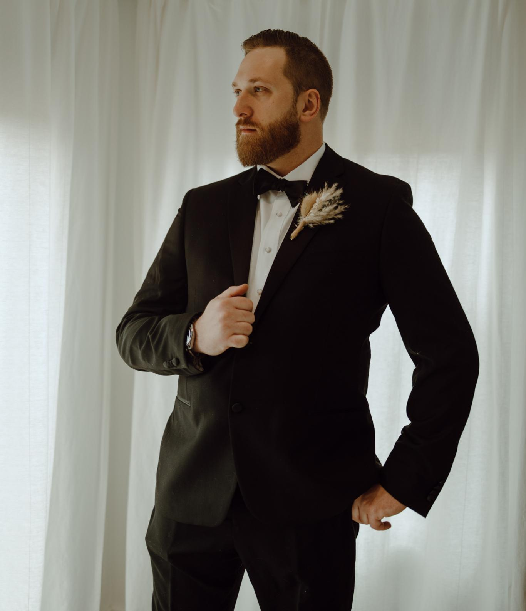

Colby Russell
Professional, adaptable, and creative Hospitality Professional looking to secure a challenging position within the Technology Industry to expand my newfound knowledge and skills in Software Engineering.
Contact Information
Skills & Abilities
| Technology |
Administrative |
Hospitality |
| Microsoft Office Suites |
External and Internal Communications |
Attention to Detail |
| Database Management |
Accounts Receivable & Payable Processing |
Customer Service |
| Sharepoint (ERP Systems) |
Invoice Processing |
Time Management |
| HTML & CSS Proficieny |
Standard Operating Procedure Development |
Adaptability |
| React&Redux |
Organizational Development |
Menu Development |
| Javascript Proficieny |
Administrative Management |
Relationship Development |
Professional Experience
Bartender - Wheatfields Bistro & Wine Bar (11/24-Present)
- Provide exceptional service to Bistro clientele by giving menu recomendations based on dietary restrictions and guest needs
- Collaborate with fellow bartenders on seasonal menus based off of current industry trends
Seasonal Foreman - Adirondack Basement Systems (05/24-10/24)
- Managed professional crew installing Poly-Level Concrete Lifting
- Act as the point of contact between customer and company to fulfill contracted work
- Executed scheduled maintainence of company vehicle, machines and tools
Office Administrator - Remarkable Liquids (06/22-05/24)
- Work extensively within ERP System (VIP) holding all customer, sales, inventory, and accounting information
- Reconcile and register daily verified payments, returned products, invoice processing and adjustments
- Acted as the Focal Point for all company communications delegating and dispatcing calls and emails which were not my direct duty
Bartender - Ryan's Wake (03/22-06/22)
- Execute drink orders and maintain customer rapport within a fast-paced environment
- Work collectively in a team effort to fill orders and assist staff if they fell behind
- Managing bar cash register and Point of Sale System to ensure accurate transactions
Bar Manager - Jacob & Anthony's Italian (03/19-03/20)
- Implemented a more refined training program for new hires
- Increased restaurant sales with a revamped Bar Menu including fresh Seasonal Cocktails, Craft Beer, and Wine offerings relavent to industry trends
- Maintained familiarity with latest bar equipment, mixology, and sanitation standards
Server - Waterworks Food & Drink (07/17-05-18)
- Effectively communicated with pertinent staff regarding customer allergies, dietary needs, and other special requests
- Displayed and retained an extensive knowledge of all liquors, wines, beers, and food
Restaurant Supervisor - The Essex Culinary Resort & Spa (08/15-08/17)
- Curated a Wine Spectator Award Winning wine menu
- Managed staff training and scheduling for the fine dining restaurant, tavern, and room service
Bar Manager - the Blue Stone (01/15-08/15)
- Seasonal Menu Development based on readily accessible, fresh and local ingredients
- Implemented an intensive inventory system to increase beverage profit margins through waste management and theft detection
Educational Experience
Stony Brook University/Springboard Software Engineering Bootcamp Foundations
Software Engineering Program - November 2024 Cohort
Paul Smith's College
Bachelor of Science, Major in Hotel, Resort & Tourism Managment, Minor in Business - Graduating Class of 2013
Broadalbin-Perth High School
High School Diploma - Graduating Class of 2009
Software Projects
Project I - Digital CV
Project II - Julius Caesar's Secret Party
Project III -
Project IV -
Thank you for stopping by!
If you have any questions, comments, or would simply like to connect with me, please leave your information below.